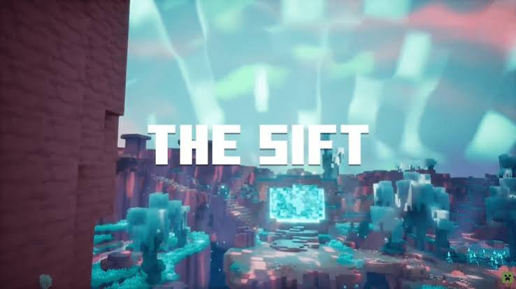

Minecraft 2026: Chaos and Wilderness

September 21, 2026 by Hugh Richards
Minecraft's 2026 game drops have expanded the way players can explore their world's. Chaos Cubed arrived on June 16 and sent players underground into the new Sulfur Caves, which are reached through noxious sulfur springs and geysers surrounded by the new sulfur and cinnabar blocks. The highlight of the drop is the sulfur cube, an adorable slime-like mob that absorbs blocks and changes how it moves depending on what it swallows.With the right block it bounces higher, slides faster or becomes a tool for traversal, combat or pure chaos. From angry bird style slings with TNT stuffed sulfur cubes to maglev like transportation the possibilities are almosy endless
Wilderness Bound followed on September 15 and brought players back to the surface. The Dappled Forest is a new autumn biome full of tall poplar trees with red, orange and yellow leaves, and Abandoned Camps now appear in existing biomes with tents and chests of supplies. The most useful addition for long expeditions is the Straw Bed, which lets you skip the night without resetting your respawn point. Builders also get cushions, a gray poplar wood set, and wool and concrete stairs and slabs. Together the two drops give players a reason to explore both above and below ground.
A New Frontier: The Sift
October 1, 2026 by Hugh Richards

The biggest news from Minecraft Live in September is The Sift, the first brand new dimension since the End and the fourth to join the Overworld, the Nether and the End. Mojang describes it as vibrant and full of souls, with a neon blue and pink look in the main game. It debuted first in Minecraft Dungeons II, which launched on September 29, so that is the only place to explore it right now. Mojang has warned that the Dungeons II version may differ from what arrives in Minecraft.
The Sift is coming to Minecraft Java and Bedrock in 2027, though many details are left unknown as there is no exact release date and the method to transport into the new dimension is still a mystery. In the mean time, the next game release will bring Ice Caves, a new underground biome with icicles, glowing ice crystals(similar to quartz), calcite and a frozen zombie variant. What most will be curious about is which mobs and blocks from the Dungeons II version will carry over and what aspects will be different. Additionally, what is yet to be known is the purpose of the sift is it simply new materials and unique items,a new boss to defeat, or steps towards world building in a game with as many mysteries as there are blocks. Regardless, for an age old classic like minecraft, a whole new dimension is a point of excitement and a moment to look forward to.